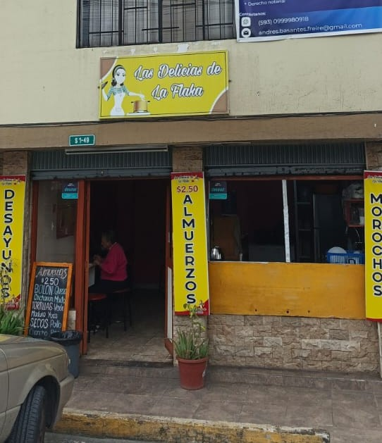

Bienvenidos a Las Delicias de la Flaka, tu rincón favorito para disfrutar del auténtico sabor tradicional. Nos especializamos en desayunos y platillos deliciosos preparados con ingredientes frescos y de primera calidad.
Creemos que comer rico es para todos, por eso ofrecemos opciones balanceadas y saludables libres de azúcar, sin perder ese increíble sabor de casa. ¡Ven y déjate consentir por nuestras recetas hechas con amor!
En cada platillo buscamos entregarte más que comida, queremos ofrecerte una experiencia inolvidable. Desde los ingredientes mejor seleccionados hasta el amor con el que servimos tu mesa.
¡Gracias por elegirnos y ser parte de nuestra gran familia! Disfruta y siente la diferencia tradicional en cada bocado.
